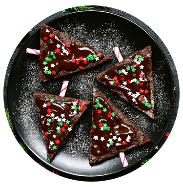

Como hacer un postre rapido y sencillo

Paletas de Brownie
ingredientes:
- 187 g de Chocolate Amargo 70% Cacao Nº100
- 45 g de Cocoa Natural 100% Cacao
- 225 g de mantequilla
- 25 g de huevos (4 huevos)
- 562 g de azúcar
- 187 g de harina
- Confitura navideña
- paletas de madera, segun la cantidad de paletas que quieras
Preparacion:
- En una olla, llevá la mantequilla a hervor sin dejar que se queme, retirá del fuego y agregá el chocolate. Mezclá hasta que se derrita.
- Aparte, batí los huevos con el azúcar levemente, agregá la mezcla de mantequilla y chocolate.
- Añadí la harina y la cocoa en polvo, mezclá de manera envolvente con una espátula.
- Colocá en un molde redondo engrasado y enharinado.
- Horneá por 20 minutos a 350ºF (175ºC). Retirá y dejá enfriar.
- Cortá el brownie en forma de tríangulos.
- Cortá el brownie en forma de tríangulos.
- Decorá con confitura navideña y chocolate derretido.

Tres Leches de Chocolate
Ingredientes para el bizcocho:
- Huevos - 5 (unidades)
- 150 g de Chocolate Amargo 50% Cacao Nº121 Harrick’s (troceado)
- 1½ tazas (210 gr) de harina de trigo
- 1 cucharada de polvo para hornear
- ¼ cucharadita de sal
- 4 claras de huevo grandes
- 1 taza (200 gr) de azúcar
- 4 yemas de huevo grandes
- ½ taza (120 ml) de leche
- 1 cucharadita de extracto de vainilla
- 1 lata (396 gr | 14 oz) de leche condensada azucarada
- 1 lata (354 ml | 12 oz) de leche evaporada
- ½ taza (120 ml) de crema de leche o crema para batir
- 3 cucharadas de Cocoa Natural 100% Cacao Costa Rican Cocoa
- 2 sobres de crema Chantilly
Preparacion:
- Mezclá bien la harina, el polvo para hornear, la cocoa natural en polvo y la sal en un recipiente mediano. Coloáa la mezcla aparte.
- Batí las claras de huevo hasta que estén espumosas. Luego agregá el azúcar lentamente mientras seguís batiendo las claras a velocidad alta, hasta obtener una mezcla espesa, aprox. unos 3-5 minutos.
- Agregá las yemas de huevo una por por una mientras seguís batiendo la mezcla y batí a velocidad alta por otros 3-5 minutos o hasta que estén bien integradas.
- Agregá la mitad de la mezcla de harina mientras continuás batiendo, hasta que esté bien integrada. Luego agregá la leche y el extracto de vainilla.
- Por último, agregá el resto de la mezcla de harina. Continuá batiendo por unos 3-5 minutos hasta que todos los ingredientes estén bien mezclados. No tenés que batir la harina demasiado.
- Prepará un molde de 9 x 13 pulgadas (23 x 33 cm) con mantequilla y harina y viertí la mezcla en el molde.
- Golpeá ligeramente para que el aire suba a la superficie y horneá en un horno pre-calentado a 350ºF (180ºC) por unos 25-30 minutos o hasta que al introducir un cuchillo en el centro salga limpio. Cuando la torta esté lista, dejala enfriar dentro del molde y sobre una rejilla por unos 10 minutos. Luego sacá la torta del molde y dejala enfriar completamente sobre la rejilla.
- En un contenedor pequeño mezclá la leche condensada azucarada, la leche evaporada, la crema de leche y las 3 cucharadas de cocoa natural en polvo. Revolvé bien y coloca aparte.
- Colocá la torta en el molde nuevamente y perforala completamente con un palillo o tenedor. Luego viertí la mezcla de las tres leches sobre la torta. Cubrila con plástico de cocina (film) y dejá reposar en la nevera por lo menos 4 horas, preferiblemente de un día para otro, esto es para que la torta absorba las tres leches completamente.
- Una vez que la torta haya absorbido las tres leches, vamos a preparar el Chantilly de chocolate. Derretí el chocolate semi amargo 50% Cacao Nº121, troceado en intervalos de 30 segundos en el microodas o en baño maría si así lo preferís.
- Una vez derretido, vertí en la mezcla para chantilly y batí hasta obtener la consistencia deseada.
- Cubrí la torta con el Chantilly de chocolate y serví.

Soufflé de Chocolate
Ingredientes:
- 10 cuadritos de Chocolate Amargo 70% Cacao Nº100
- 200 gr de mantequilla
- 120 gr de azúcar
- 5 yemas de huevo
- 2 claras de huevo
Preparacion:
- Los huevos deben estar a temperatura ambiente, si los tenés en la refrigeradora sacalos 3 horas antes.
- Montar las yemas con el azúcar, a punto blanqueado, en la batidora a velocidad máxima durante 3 minutos.
- Por otro lado, fundí el chocolate picado, mezclá con la mantequilla al baño maría o, bien, en el microondas a mínima potencia.
- Vertí el chocolate en hilo fino sobre las yemas montadas con el azúcar y mezclá al mismo tiempo en forma envolvente y con cuidado.
- Rompé las claras con una varilla y añadilas a la mezcla, siempre incorporando de forma envolvente y con cuidado.
- Llená los moldes con unos 80 gr de masa, con la ayuda de una manga de plástico, y meté en el congelador para que se enfríe rápidamente.
- Antes de hornerarlos, sacalos 1 hora antes del congelador.
- Horneá a 200°C de 7 a 14 minutos, dependiendo del recipiente que hayás escogido: si es muy fino, 7 minutos, y si es muy grueso, 14 minutos.
- Serví junto al helado que más te guste.

Postre de limon
ingredientes:
- 4 limones grandes
- 400 gramos de leche condensada
- 600 gramos de crema de leche o nata refrigerada
- Algunas galletas dulces (algunos ejemplos de marcas son: María, Macarena o Ducales)